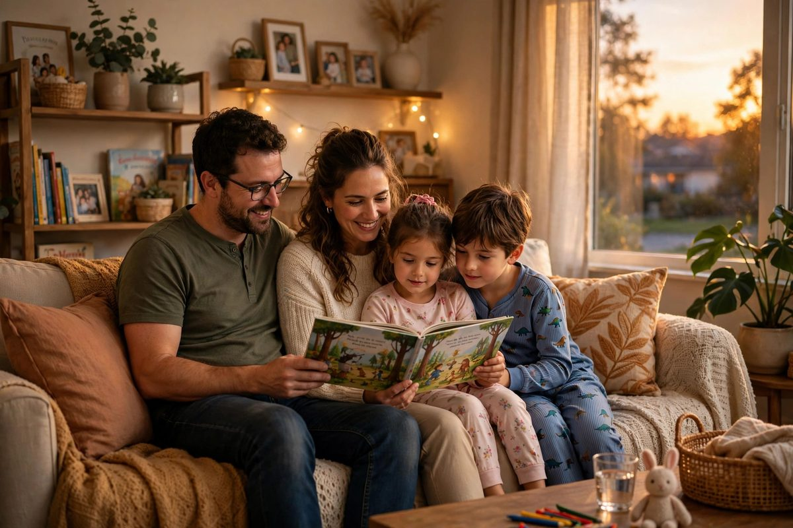

Sleep Needs by Age
How much sleep newborns, children, teenagers, adults and older people need, and why the numbers change.
Sleep need changes dramatically across life: a newborn sleeps most of the day, a teenager needs more than an adult, and an older person needs slightly less but often sleeps worse. The numbers are not arbitrary; they reflect what the brain and body are doing at each stage. This guide gives the recommended ranges for each age group and explains why they differ.
Babies and young children
Newborns sleep 14 to 17 hours a day, in short stretches, because their brains are growing fast and their stomachs are small. Infants of 4 to 11 months need 12 to 15 hours, including naps. Toddlers of 1 to 2 years need 11 to 14 hours, and children of 3 to 5 years need 10 to 13 hours, including a nap. Children of 6 to 13 years need 9 to 11 hours. These are large amounts because growth, learning and brain development all happen during sleep, and a child who is short of sleep shows it quickly in mood, behaviour and learning.
Teenagers
Teenagers need 8 to 10 hours, more than adults, but their body clock shifts later, so they naturally feel sleepy late at night and groggy early in the morning. This is a biological change, not laziness: the hormone that signals sleepiness is released later in teenagers. Early school starts therefore clash with teenage biology, and many teenagers are chronically short of sleep during the school week. A regular schedule, no screens in the last hour, and a lie-in at the weekend that is not too long are the practical compromises.
Adults
Adults aged 18 to 64 need 7 to 9 hours, and adults over 65 need 7 to 8 hours. The range is wide because individuals differ, and the right amount is the one that leaves you alert through the day. Young adults often need the upper end of the range, especially if they are active or learning. The need does not fall sharply at 65; what changes is that sleep becomes lighter and more broken, so older adults may need more time in bed to get the same amount of sleep.
Older adults
Sleep in later life is lighter, with more awakenings and less deep sleep, which is why older adults often wake early and nap in the day. The need is still 7 to 8 hours, but getting it can be harder. Regular daytime light, daily movement, a regular schedule, and treating any pain or health problems that disturb sleep all help. Sleeping tablets are not a good long-term answer, because they can cause confusion and falls. If sleep problems persist, a doctor can help, and there are effective non-drug treatments.
What the numbers mean for your family
Use the ranges as a guide for bedtimes, not as a strict rule. A child who is alert, growing well and in a good mood is probably getting enough, whatever the exact number. A teenager who falls asleep in class is probably not. An adult who needs caffeine all day is probably not. Work backwards from the wake time using the calculator, and adjust the bedtime until the day feels right. The number that matters is the one that works for the person in front of you.
Bedtimes for a family, worked out
Take a family that must wake at 7 a.m. A 4-year-old needing 11 hours should be asleep by 8 p.m., so bedtime is about 7:30 p.m. An 8-year-old needing 10 hours should be asleep by 9 p.m., so bedtime is about 8:30 p.m. A 15-year-old needing 9 hours should be asleep by 10 p.m., so bedtime is about 9:30 p.m., though their clock will fight it. The parents, needing 8 hours, should be asleep by 11 p.m. The staggered bedtimes look complicated, but they follow one rule: count backwards from 7 a.m. in 90-minute cycles, add the time to fall asleep, and the bedtime appears. The same rule works for every age, and it is the reason the calculator is useful for a whole household.
Frequently Asked Questions
How much sleep does a teenager need?
8 to 10 hours. Their body clock also shifts later, so they naturally feel sleepy late and groggy early.
How much sleep do older adults need?
7 to 8 hours. Sleep becomes lighter and more broken with age, so more time in bed may be needed to get it.
Do children need more sleep than adults?
Yes, much more. A toddler needs 11 to 14 hours and a school-age child 9 to 11 hours, because growth and brain development happen during sleep.